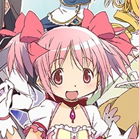
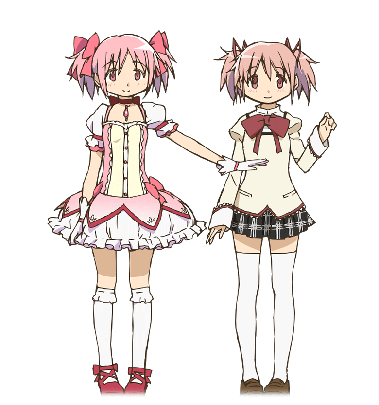
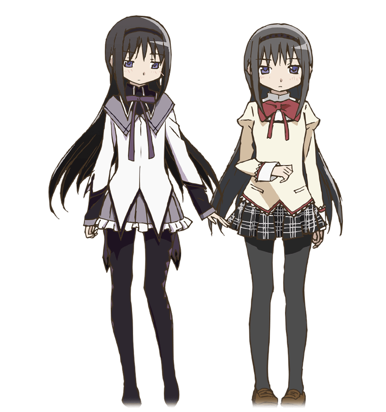
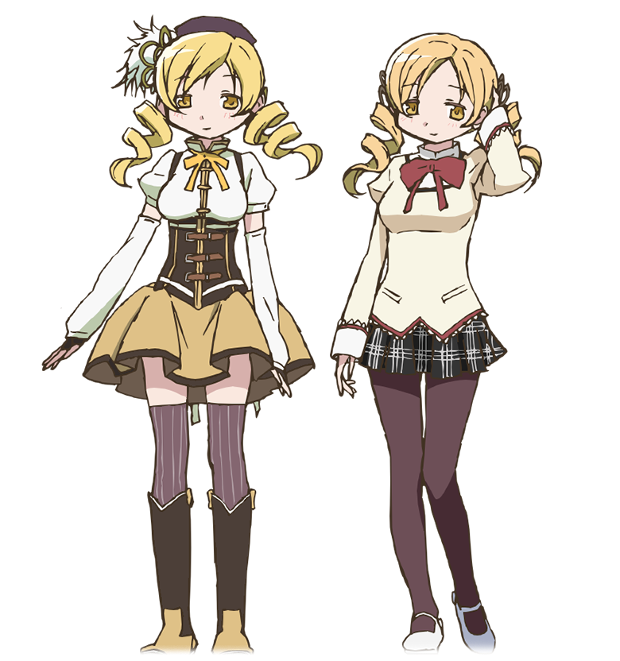
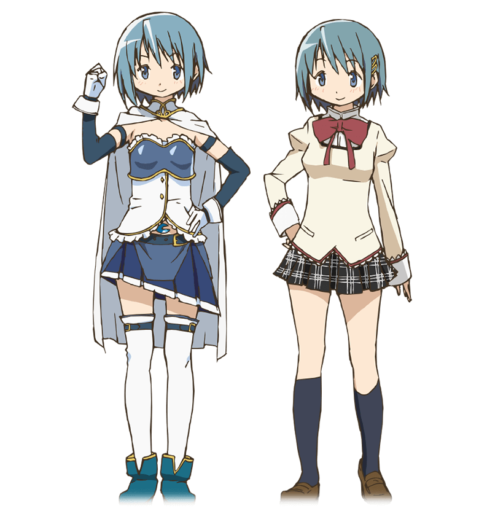
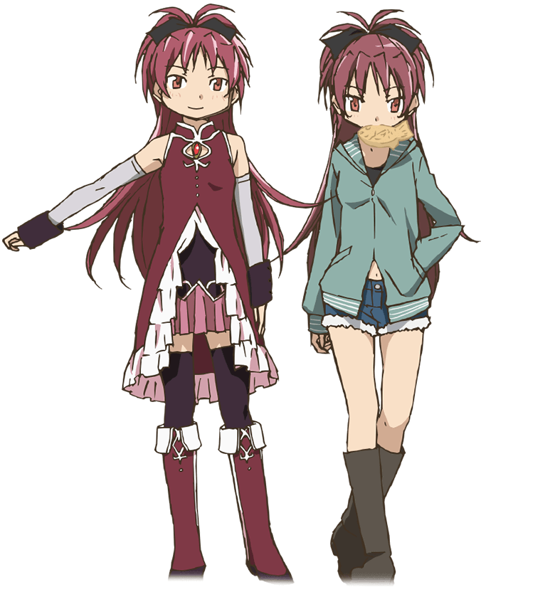
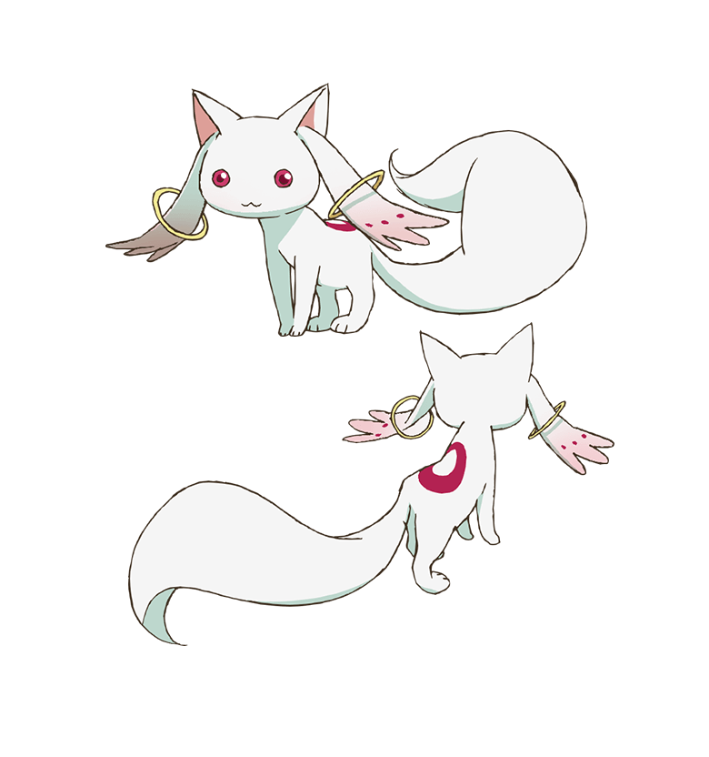

FORM · 01 / 魔法少女
鹿目 まどか Ver. MG
KANAME MADOKA / MAGICAL GIRL
- 武器
- 弓矢 / ソウルジェム
- 衣装
- 桜色リボン × 白いフリル
- 属性
- 光 / LIGHT
"どんな絶望も、きっと光に変わると信じている。"
KANAME MADOKA / MAGICAL GIRL
"どんな絶望も、きっと光に変わると信じている。"

KANAME MADOKA / EVERYDAY
"普通の女の子でいることが、彼女の小さな願い。"
見滝原の五人の少女と一つの契約
"ありがとう、さやか。あなたがくれた勇気を、忘れない。"






「まどか、きみを救うためなら、
何度でもこの時間をやり直す。」
「でも、最後にきみが選んだのは、
世界全部を救うことだった。」